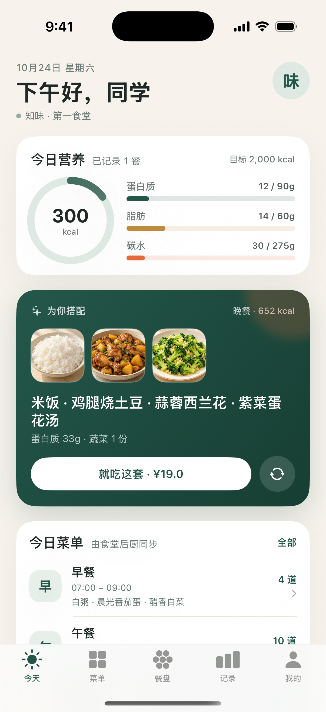
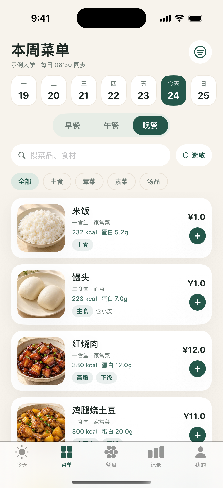
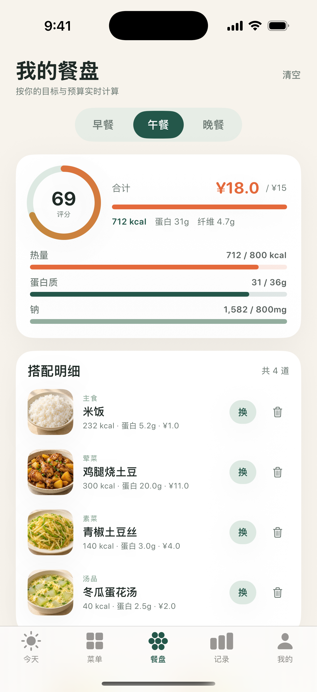
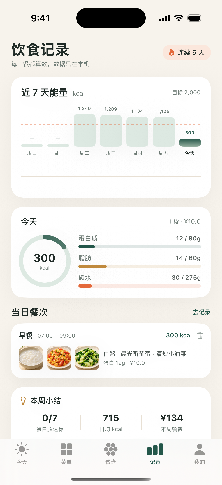
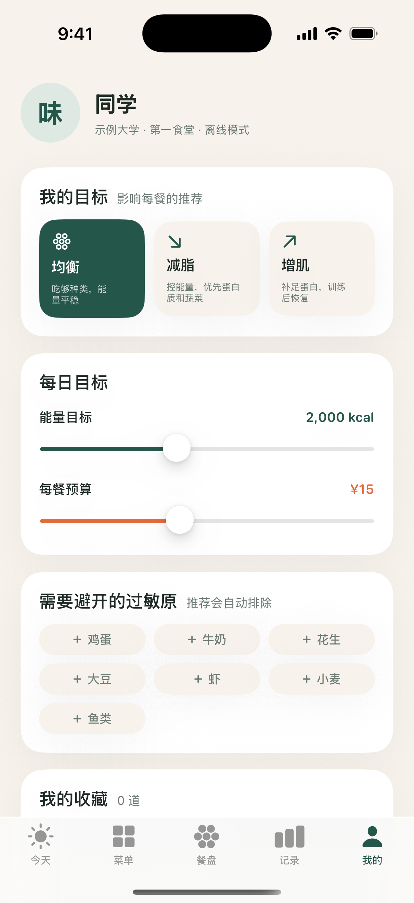

把食堂后厨的营养账本，变成学生看得懂的一餐。第一版已能在 iOS 模拟器完整跑通：看今日推荐、翻菜单、换搭配、记录，再回看一周趋势。

今日营养环 + 当前餐次的最优组合，点「就吃这套」直接进入餐盘；底部是食堂公示的人均油盐与溯源批次。

7 天日期条、早/午/晚切换、搜索、分类和「避敏」开关；每道菜都带标准份量营养与过敏原。

主食/荤菜/素菜/汤四个槽位，实时显示评分、总价对预算、热量/蛋白/钠进度；可逐道换，也可整套换。

近 7 天能量柱状图 + 目标线，当日营养汇总、餐次明细，以及蛋白质达标天数、日均热量与餐费小结。

均衡/减脂/增肌、能量目标、每餐预算、过敏原与收藏。所有设置只影响本机推荐，不上传。
已经发现并正在修：推荐组合曾出现「¥18 超 ¥15 预算」、截图日期/餐次不一致、记录页目标线位置、餐盘页底部主按钮不够显眼。下一轮构建会更新这组图。
对「主食 × 荤菜 × 素菜 × 汤」做组合评分：热量贴合、蛋白质达成、纤维、钠、预算、人气；过敏原在组合前直接排除，不会先推荐再警告。
已产出未签名 ZhiweiTray-unsigned.ipa。用 Sideloadly / AltStore 配免费 Apple ID 自签即可，7 天有效、可续签。